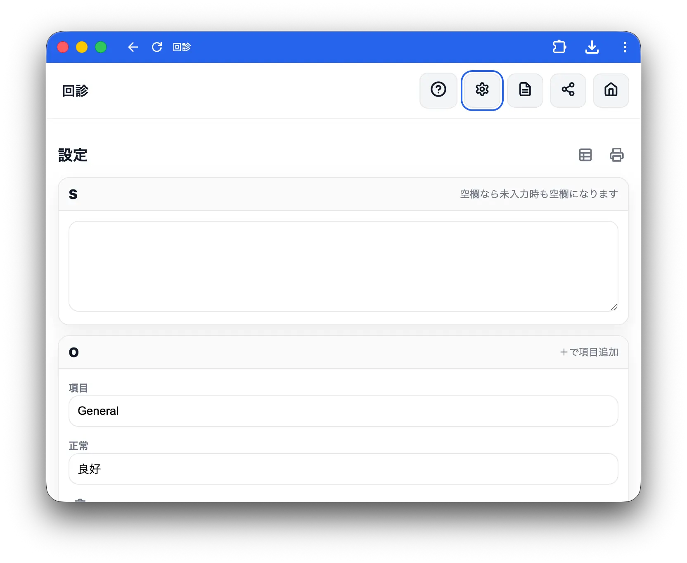
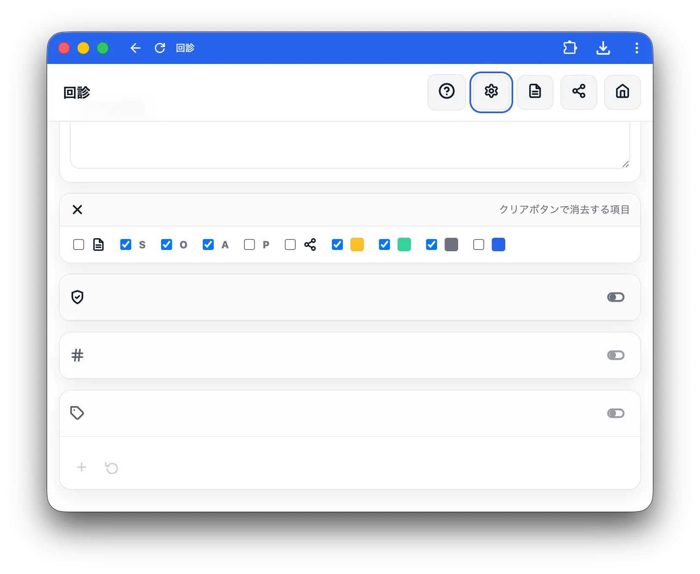

設定
ホーム画面のギアアイコン（設定）から開きます。

デフォルト文言
S・A・Pの各欄が空欄のときに出力される文言を設定します。
| 項目 | 初期値 | 用途 |
|---|---|---|
| S | （空欄） | 空欄のまま出力したい場合は空にしておく |
| A | 著変なし | 変化がない場合の定型文 |
| P | 現行加療継続 | 継続治療の定型文 |
O所見項目のカスタマイズ
身体所見（O）の「正常」ボタン項目を追加・編集・削除・並び替えできます。
初期設定の項目
| 項目名 | 「正常」ボタン押下時の出力 |
|---|---|
| General | 良好 |
| 肺音 | 明らかなラ音なし |
| 腸音 | 正常 |
| 腹部 | 平坦軟、圧痛なし |
項目の追加
＋アイコンをタップすると新しい項目を追加できます。
| 入力欄 | 内容 |
|---|---|
| 項目名 | 一覧に表示されるラベル（例：「浮腫」） |
| 正常テキスト | 「正常」ボタンを押したときに出力される文言（例：「なし」） |
項目の削除
各項目のゴミ箱アイコンをタップすると該当項目を削除できます（確認あり）。
初期化
回転矢印アイコン（初期化）をタップすると初期設定の4項目に戻ります（確認あり）。
✕印（クリア対象のカスタマイズ）
患者画面の✕丸アイコン（クリア）で消去する項目を選択します。カード見出しの✕丸アイコンで各項目のオン／オフを切り替えられます。
| 項目 | デフォルト |
|---|---|
| メモ | OFF |
| S | ON |
| O（バイタル含む） | ON |
| A | ON |
| P | OFF |
| 共有 | OFF |
| 黄 | ON |
| 緑 | ON |
| 灰 | ON |
| 青 | OFF |
一覧・印刷
設定画面内の表アイコン（総覧）をタップすると一覧画面に移動します。プリンターアイコン（印刷）をタップするとブラウザの印刷ダイアログが開きます。
デフォルトで無効の機能

上から順に、管理機能、部屋番号機能、タグ機能です。 必要に応じてONにして使ってください。
管理機能は未完成です。詳細はリンク先を参照してください。